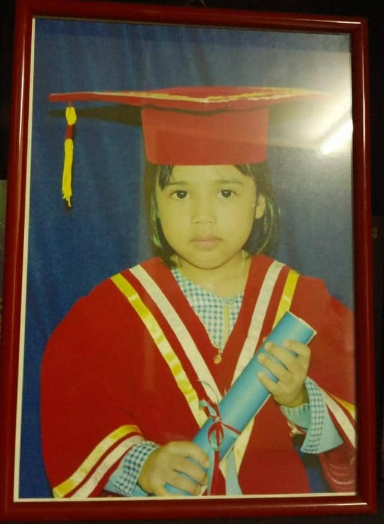
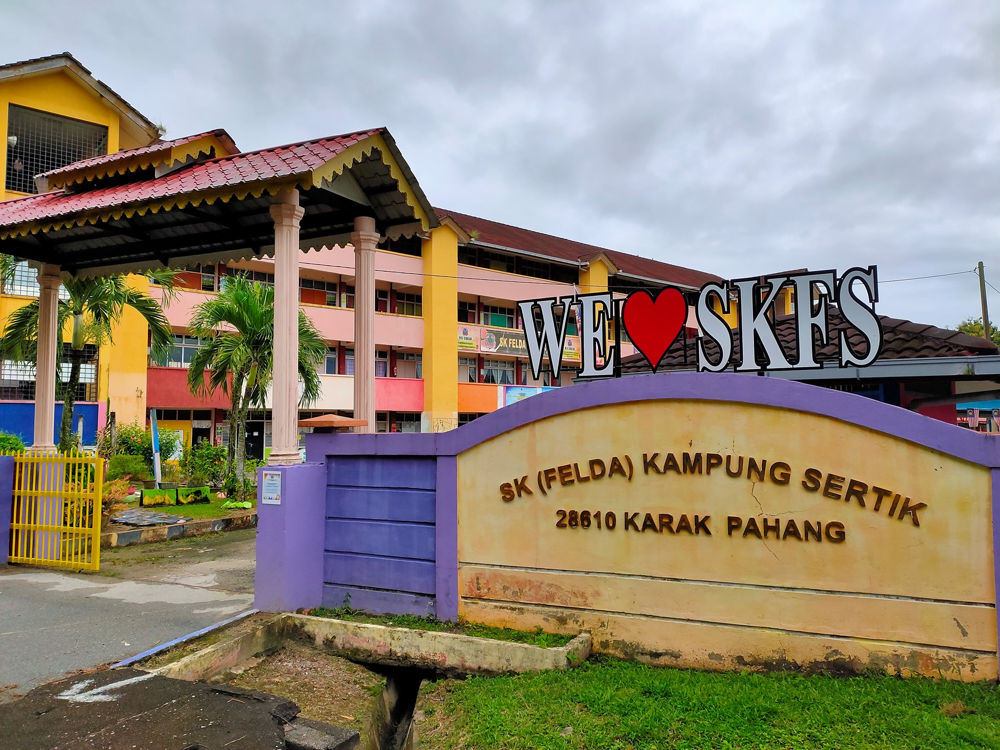
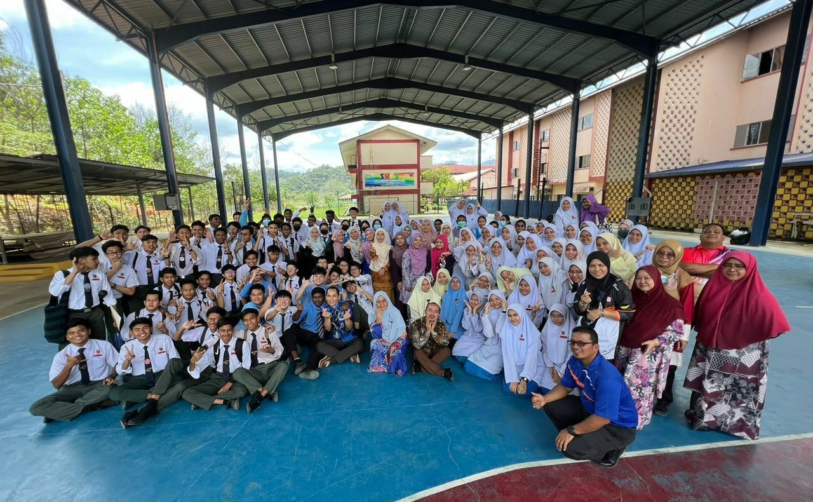
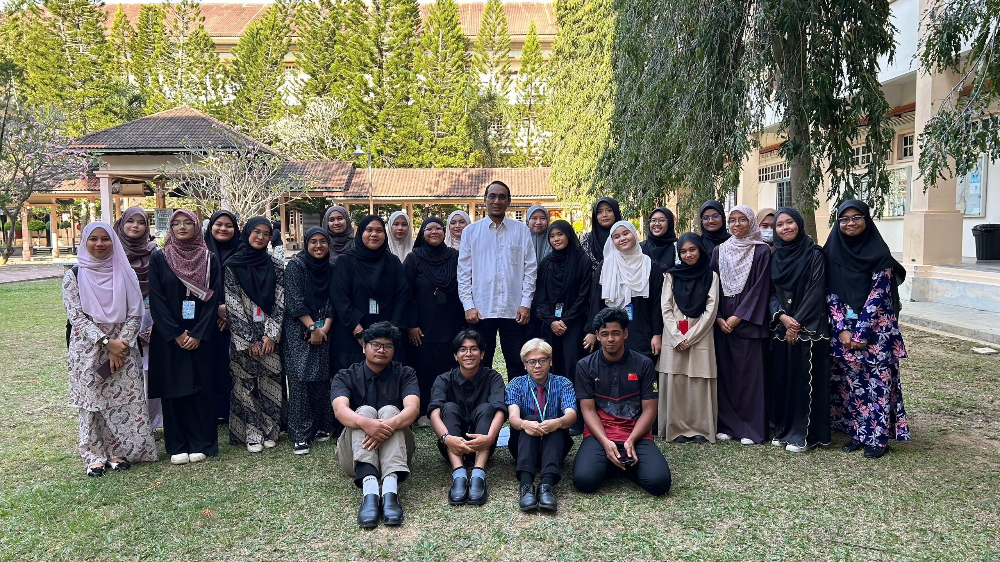

🎓 My Education Journey
Here's a fun table of my academic adventure from little me to future librarian! 💖📚
| Level | School Name | Years Attended | Highlight |
|---|---|---|---|
| 🏫 Kindergarten | TABIKA KEMAS FELDA KG. SERTIK | 2010 - 2011 | Learned ABCs and sang nursery rhymes 🎶 |
| 📘 Primary | SK FELDA KAMPUNG SERTIK | 2012 - 2017 | UPSR 🌟 |
| 📗 Secondary | SMK SULAIMAN, BENTONG | 2018 - 2023 | SPM⭐ |
| 📚 Diploma | UiTM KEDAH | 2023 - Now | President of academic club 🏅 |
🌟 My Education Story 🌟
🏫 Kindergarden
I started kindergarten at TABIKA KEMAS FELDA KG. SERTIK when I was about 5 to 6 years old. It was here that I made my very first friends and experienced school for the first time. Learning how to read and count. Those early days were filled with excitement, new discoveries, and lots of fun!
🏫 Primary School
I began my learning journey at SK FELDA KAMPUNG SERTIK.I attended primary school here for six years, from ages 7 to 12. During this time, I started building my confidence to speak in front of others and learned many new skills.
I was also quite active in sports.I got 5A’s in my UPSR exam and was honored to be named the best student at the school. It was at this school that I got to know lots of people and improved my English, reaching the level I speak todayand I’m still getting better! This is also where I began to develop into the lively and noisy “Sufi Pinggu” that everyone knows today.
🎒 Secondary School
I continued my studies at SMK SULAIMAN, BENTONG. I attended secondary school here from ages 13 to 18. Because of COVID-19, I was part of the SPM Promax batch and the first batch where PT3 was canceled.
These years were a time where my lively and talkative nature really polished itself even more! It was here that I found my best friends, twin, Fatimah and Aminah, who remain close to me to this day.
Secondary school was a place where I began to mature, encountering all kinds of people both good and challenging. The journey through SPM was more than just exams, it was a journey that shaped me into who I am today.
🎓 Diploma at UiTM
Now, I’m pursuing my diploma in Library Informatics at UiTM Kedah.I never imagined I’d end up in Kedah or even what this course was truly about. It wasn’t my first choice, but I decided to take it on to explore and try something new, always believing there must be a reason and a lesson behind everything.
Once I started, I realized this field is big. There’s so much to learn and do! Many skills I learned back in secondary school, especially in coding and computer science, came in handy again.
With about one semester left, I’m eager to make the most of my time here and create great memories. I’m grateful to have met wonderful people, including lecturers who patiently handle my noisy personality. Despite the noise, my grades are solid! Here, I’ve also gained valuable experience as the president of the INSTICS club, and I continue striving to do my best every day.
"Education is not preparation for life; education is life itself." – John Dewey
Thanks for reading! Let’s keep learning and growing! 🌱💙
When the librarian secretly loves memes more than books 😂📚